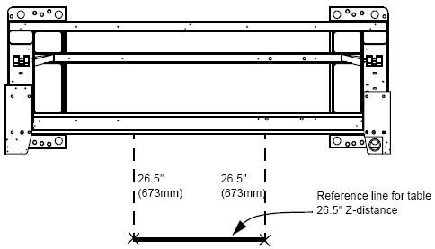
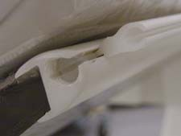
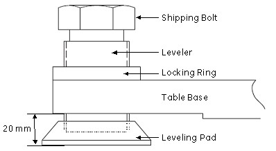

Operating Documentation
Direction 5193574-800, Rev# 22
LightSpeed 7.X Service Methods
Module Version 1.0, Version Date 4/22/10
Operating Documentation |
| Labor: | 1 person; 0.25 man-hour |
| Tools: | Standard Install Tool Kit |
| Socket Set |
| ||||
| Potential for injury. | ||||
| GT 2000 Table on dolly length is 3 m (9 ft.-10 in.). | ||||
| Exercise caution when moving the table on the dolly. |
1. Measure and mark two spots 673 mm (26.5 inch) from the gantry base frame (under the front cable tray) out toward the table floor cutouts. Snap a chalk line between the two marks. |  |
2. Move the table close to its final position, with the base frame on the reference line and the leveling pads centered over the floor cutouts. | |
3. Remove the table covers. |  |
4. Remove the accessory rail strip from both sides. | |
5. Preset the leveling pad heights to 20 mm and lower the table until it nearly rests on the leveling pads. Leave the shipping bolts in place. |  |
| “Show Me”: |
| “Tell Me More” |